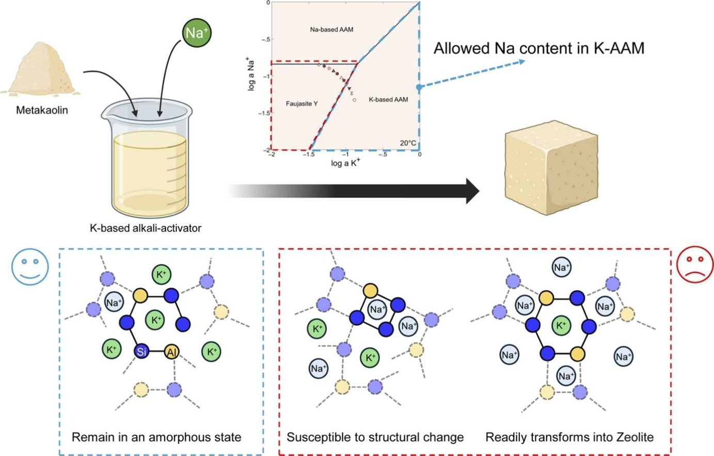
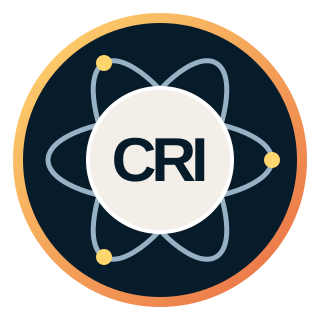
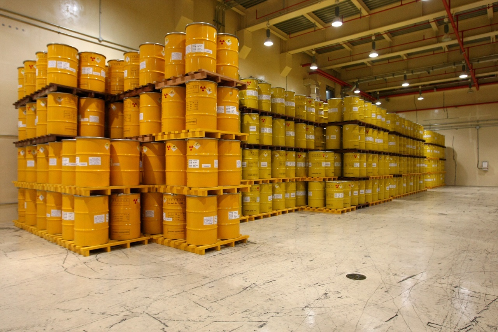
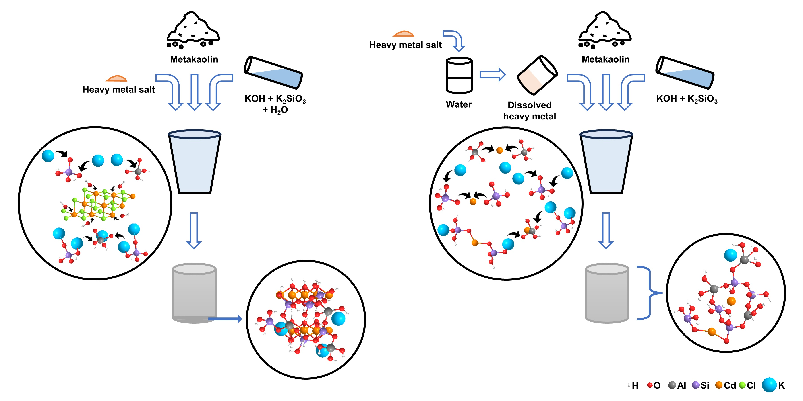
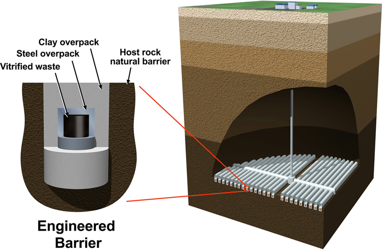

ALKALI-ACTIVATED WASTE FORMS
Turn complex wastes into durable solids
I design durable alkali-activated materials from metakaolin, natural minerals, and contaminated soils.

CHAERUN RAUDHATUL

I study how hazardous species bind within cementitious materials and remain contained during disposal.

I design durable alkali-activated materials from metakaolin, natural minerals, and contaminated soils.

I study how radionuclides and heavy metals are captured and retained in cementitious matrices.

I combine spectroscopy, microscopy, geochemical modelling, machine learning, and GoldSim to predict long-term safety.
Researcher, Japan Atomic Energy Agency
ALKALI-ACTIVATED MATERIALS, GEOCHEMICAL MODELLING, RADIONUCLIDE AND HEAVY-METAL IMMOBILIZATION, SAFE DISPOSAL